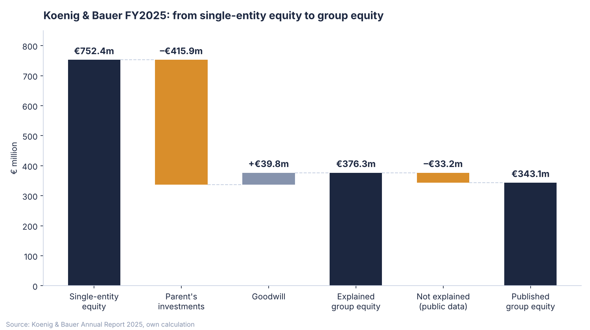

Group consolidation with real data: Koenig & Bauer
How do the accounts of 40 separate companies become one set of group figures?
Using the 2025 annual report of the listed printing press maker from Würzburg, I rebuilt the main consolidation steps: the group structure, the bridge from single-entity equity to group equity, and currency translation under IAS 21. I then mapped the monthly group close to SAP S/4HANA Group Reporting and rebuilt the results in Python with automated tests.
- Consolidation units
- 40 in 13 currencies
- Gap left by public data
- €33.2m documented, not forced to zero
- US subsidiary growth
- +33% in USD, only +18% in EUR
Excel, Python, ECB exchange rates, pytest, SAP Group Reporting mapping
